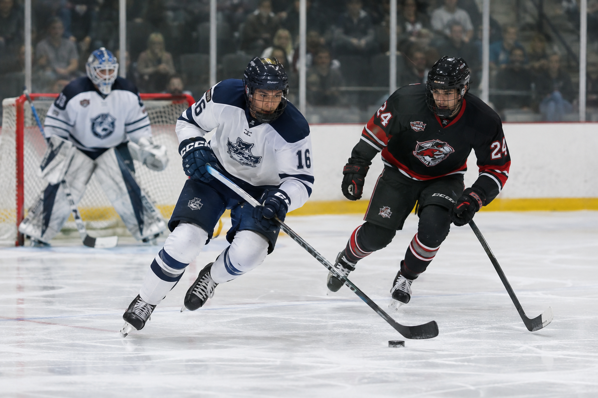
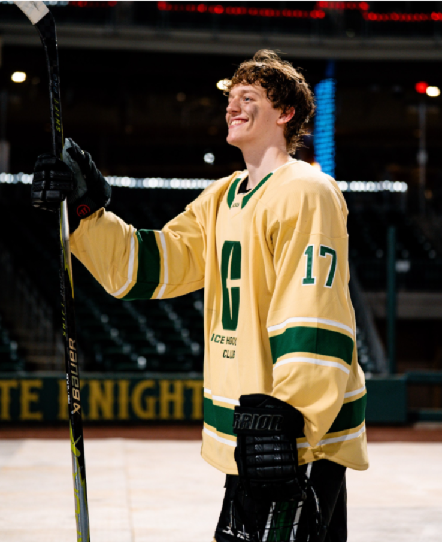
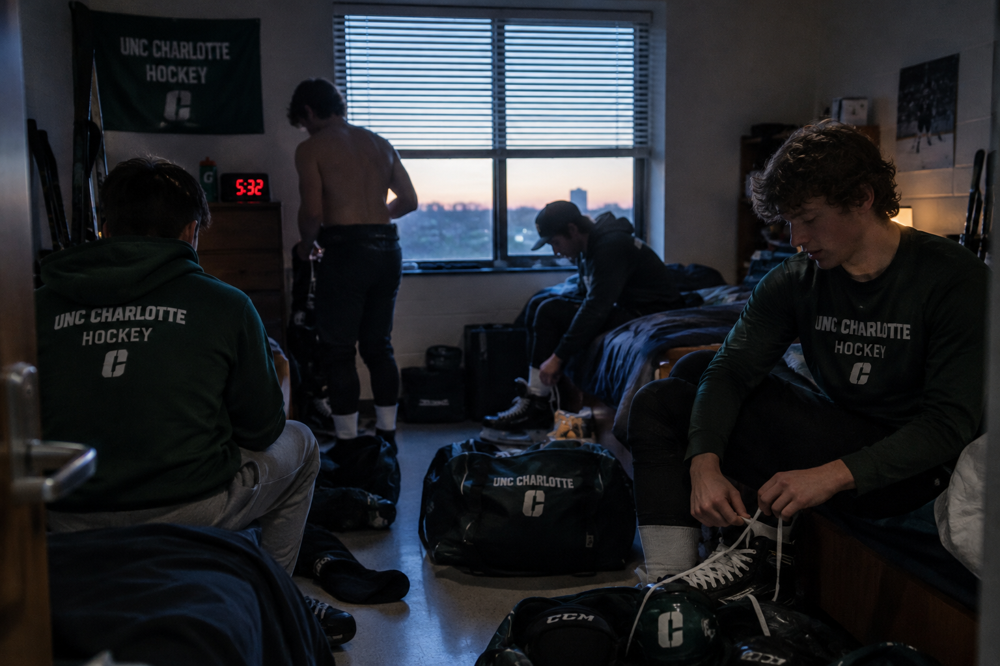

Regular Season
Professional hockey teams play their regular-season games during the colder months of the year.
Hockey is a sport played with players skating on ice and a rubber puck is used as the ball. The objective is to score goals by shooting the puck into the opposing team's net. The objective is to put the puck into the other team's net while preventing the opposing team from scoring.

I have personally played hockey since I was 5 years old. I currently play for the school team here at UNCC.

Hockey can be enjoyed throughout the year, but organized leagues generally follow specific seasons and schedules.
Professional hockey teams play their regular-season games during the colder months of the year.
After the regular season, qualifying teams compete in playoff rounds to determine the league champion.
The offseason is useful for training, practicing skills, following player movement, and preparing for the next season.
| Activity | Typical Time |
|---|---|
| Watch a Game | Evening |
| Practice | Afternoon or Evening |
| Follow Hockey News | Any Time |

Hockey can be enjoyed at professional arenas, community ice rinks, college facilities, and recreational leagues.
Professional hockey is played in large arenas designed to hold thousands of fans and provide an exciting game-day atmosphere.
Community ice rinks provide opportunities for people to learn skating, join recreational leagues, and practice hockey.
College hockey gives fans another opportunity to watch competitive hockey while supporting their school and local teams.

Getting involved with hockey starts with learning how to skate, understanding the basic rules, and becoming comfortable with hockey equipment.
Strong skating skills provide the foundation for hockey. Balance, stopping, turning, and acceleration are important skills to practice.
Understanding offsides, icing, penalties, faceoffs, and basic positioning makes watching and playing the game easier.
Players can improve by practicing stickhandling, passing, shooting, skating, and positioning on a regular basis.

Hockey is a hobby I enjoy because it combines competition, athleticism, teamwork, and entertainment into one sport.
The competitive nature of hockey makes every shift, play, and scoring opportunity meaningful.
Players have to communicate and work together because no single player can control an entire hockey game.
The speed of skating, physical play, scoring chances, and quick changes in momentum make hockey exciting to watch.

AI was used to help develop parts of this hobby website, including planning, writing, and generating visual concepts.
"Help me create a multi-page-style hobby website about hockey that follows CRAP design principles."
"Write short informational content explaining what hockey is, when it is played, where it can be enjoyed, and why someone might enjoy the sport."
"Create photorealistic hockey images with a consistent visual style for a personal hockey hobby website."

AI prompt used for this image: "Create a photorealistic hockey scene that represents the use of artificial intelligence in creating a personal hobby website."
AI was used as a development and brainstorming tool. The final website was reviewed and organized to meet the assignment requirements.